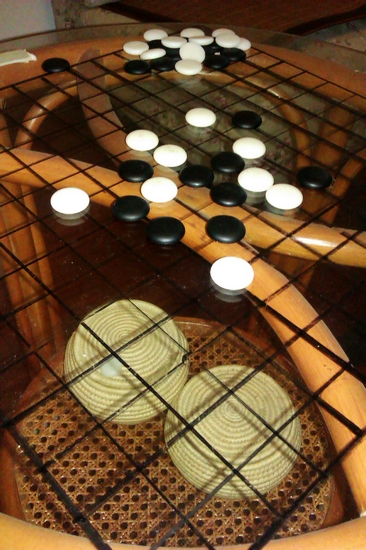
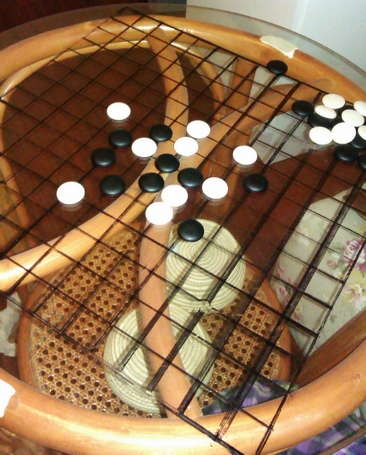

家里的棋盘
#1 家里的棋盘 作者：有志青年 发表时间：2011-10-10 19:45:36


#2 Re:家里的棋盘 作者：掌棋如烟 发表时间：2011-10-10 20:00:22
黑棋子在背景下不是很明显了，创意不错，我喜欢，你是自己印上去的吗？#3 Re:家里的棋盘 作者：有志青年 发表时间：2011-10-10 20:08:45
步骤1：用白板笔（或水彩笔之类）在桌面上画正方形，边长40cm
步骤2：将四边按2.5cm做分割记号
步骤3：用油漆笔画内心的网格线
步骤4：擦掉步骤1的四边，用油漆笔重新画边框（油漆笔不可直接在白板笔上画的）
#4 Re:家里的棋盘 作者：掌棋如烟 发表时间：2011-10-10 21:55:55
云子也很不错，油亮亮的，圆润可爱#5 Re:家里的棋盘 作者：梧桐风 发表时间：2011-10-10 22:20:41
 我要跟楼主PK，画在玻璃的背景感觉不好咯~找个画板来撒
我要跟楼主PK，画在玻璃的背景感觉不好咯~找个画板来撒
话说当初为了办学校第一校校大赛和高校赛，吾画了二十多个棋盘，大伙都说这是买的，不是画的~
#6 Re:家里的棋盘 作者：梧桐风 发表时间：2011-10-10 23:09:05
#7 Re:家里的棋盘 作者：梧桐风 发表时间：2011-10-10 23:10:56
后面两个棋盘是一个棋友生产的，不过正面有图案反而觉得不好，做成淡黄色的比较好#8 Re:家里的棋盘 作者：有志青年 发表时间：2011-10-11 15:00:02


这还是06年的时候的事情吧，纯手工打造的。
步骤：
1、木工板上底漆（黄色）
2、油漆笔画棋盘
3、再覆盖一层清漆
#9 Re:家里的棋盘 作者：梧桐风 发表时间：2011-10-11 17:29:20
不错，是不是和上海的交流赛就用这些棋盘~#10 Re:Re:家里的棋盘 作者：蓝天蓝 发表时间：2011-10-13 15:21:27
引用：
原文由 掌棋如烟 发表于 2011-10-10 21:55:55 :
云子也很不错，油亮亮的，圆润可爱
俺也有一副云子，就是没有木质的棋盘